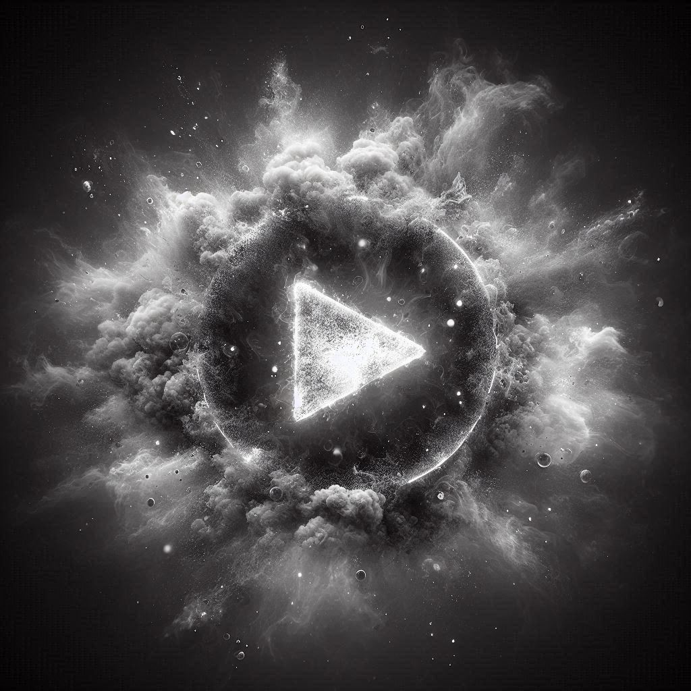
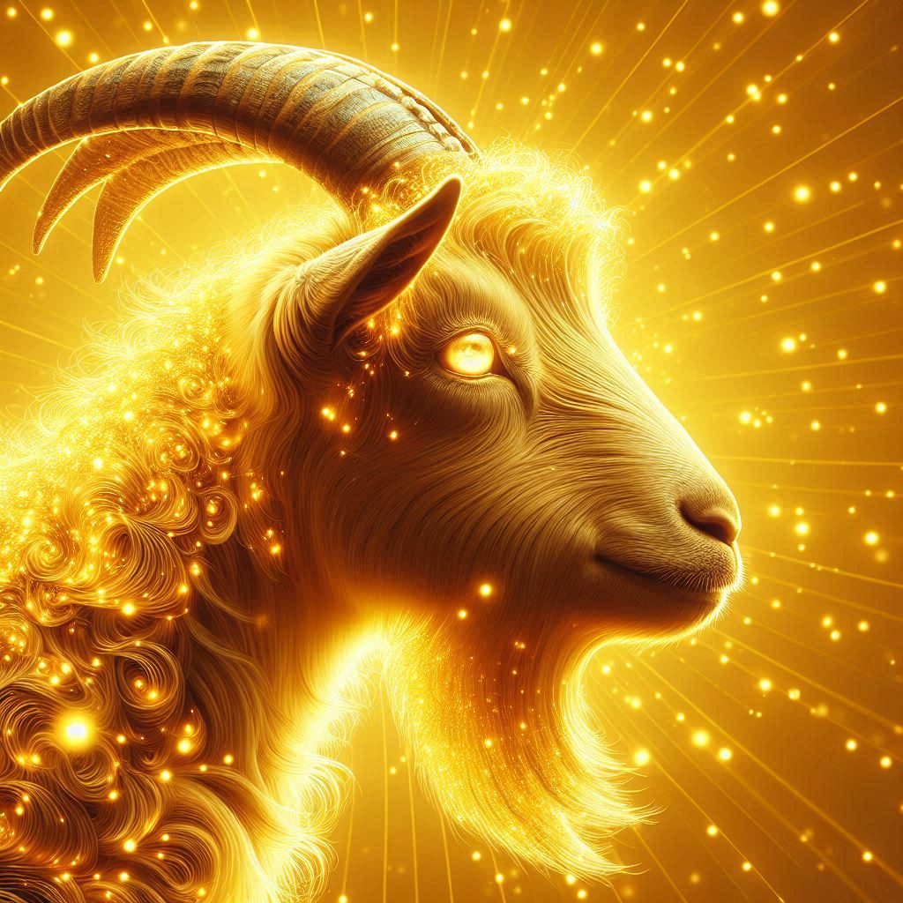

About Me
Learn about me and my experience with Kpop
My Kpop Experience
I started listening to Kpop in December 2024. I liked Phonk and EDM before. I am:
- 17 years old
- He/Him
I don't really care about music videos, so my song recommendations are solely based on how the song sounds. That being said, these are my favorite kpop artists:
- fromis_9
- Red Velvet
- Twice
- tripleS
- IVE
I found the large majority of kpop songs either through the Apple Music algorithm or Youtube videos. If for whatever reason you want to search for kpop too, here are some of the channels I like:
Everything on Kpop Monkey are my personal preferences. Since my music taste is questionable, the "Monkey" refers to me. You can find all the songs I recommended and a lot more in the playlists listed below--however, note that some of them contain non-kpop (Phonk and EDM).
My Kpop Playlists
Click on the icon to view the playlist
|  |
UnderplayedMy favorite songs right now |
|
|
VibeMy everyday playlist |
ChillSongs to relax to |
|
|  |
GoatMy favorite songs of all time, in order |
MasterpieceSongs I think sound like a masterpiece (I didn't make a playlist icon yet) |